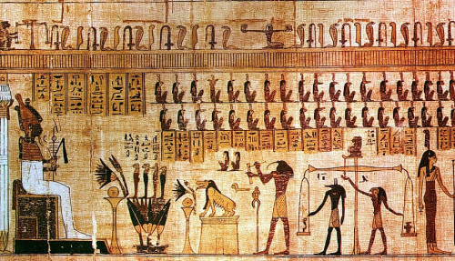

A festészet története
A festőművészet a képzőművészet egy ága, amely síkbeli színekből, vonalakból állít elő művészi kompozíciót.Története több mint 64 ezer évre nyúlik vissza.


A kezdetek kezdetén ezen művészeti ág barlangfalakra mázolt állatokat jelentett. Eleink úgy hitték, hogy ennek köszönhetően hatalmukba kerül a vad, s könnyebben elejtik.
A történelem során az ember használta a festészetet, hogy kétdimenziós vizuális nyelveken ötleteket és érzelmeket fejezzen ki.
